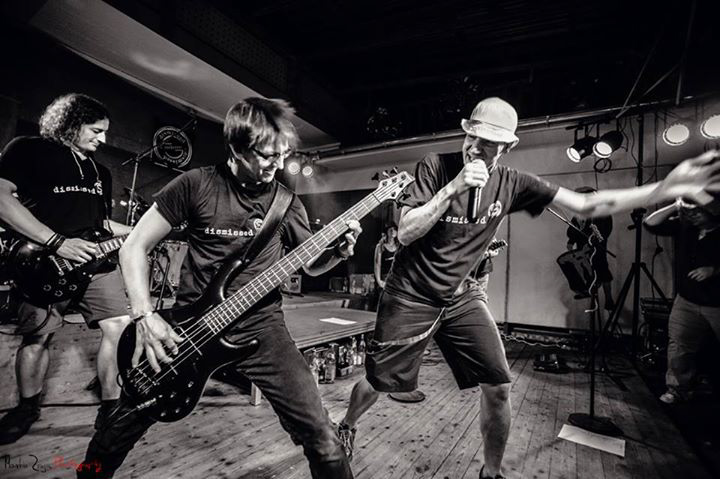
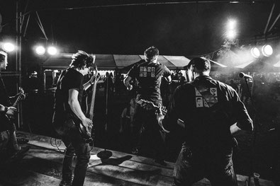

Keep on rockin in a free world!
30.03.2022

Mit diesem Klassiker melden wir uns zurück - in einer immer noch verrückten Zeit freuen wir uns, bald wieder mit euch wieder die Bühnen zu rocken!
Nach ein paar vereinzelten Gigs 2021 sieht es wirklich so aus, dass allmählich wieder Normalität einkehrt. Wenn wir eines nach dieser langen Zeit nötig haben, ist es endlich wieder gemeinsam Zusammenzukommen, zu Tanzen, Singen und Rocken!
Die ersten Auftritte sind - wirklich - bestätigt und wir können es kaum erwarten, dass es wahr wird. Bis dahin werden wir erst einmal unseren Proberaum entstauben, überlergen, wie die Songs nochmal gingen... und die ein oder andere Überraschung vorberreiten. Weitere Termine und ob die Veranstaltungen wie geplant stattfinden, werden wir euch hier und auf unserer Facebookseite mitteilen.
Bis wir uns dann hoffentlich auf dem einen oder anderen Gig endlich wiedersehen, bleibt gesund und lasst uns gemeinsam für eine "free world" Rocken!
Eure Jungs und das Mädel von Dismissed
Nach ein paar vereinzelten Gigs 2021 sieht es wirklich so aus, dass allmählich wieder Normalität einkehrt. Wenn wir eines nach dieser langen Zeit nötig haben, ist es endlich wieder gemeinsam Zusammenzukommen, zu Tanzen, Singen und Rocken!
Die ersten Auftritte sind - wirklich - bestätigt und wir können es kaum erwarten, dass es wahr wird. Bis dahin werden wir erst einmal unseren Proberaum entstauben, überlergen, wie die Songs nochmal gingen... und die ein oder andere Überraschung vorberreiten. Weitere Termine und ob die Veranstaltungen wie geplant stattfinden, werden wir euch hier und auf unserer Facebookseite mitteilen.
Bis wir uns dann hoffentlich auf dem einen oder anderen Gig endlich wiedersehen, bleibt gesund und lasst uns gemeinsam für eine "free world" Rocken!
Eure Jungs und das Mädel von Dismissed
2020 - das etwas andere Jahr
19.05.2020

Seit 13 Jahren spielen wir zusammen, und eigentlich hätten jetzt bereits die ersten beiden Auftritte stattgefunden.
Doch dieses Jahr scheint es wirklich das erste gigfreie Jahr seit bestehen von Dismissed zu sein - für uns ein wirklich seltsames Gefühl. Inzwischen wurden auch für uns alle in diesem Jahr geplanten Auftritte abgesagt.
Trotzdem - Hoffnung bleibt, und wir hoffen, dass wir vielleicht doch noch in diesem Jahr gemeinsam mit Euch mindestens einmal rocken können!! Bis dahin wünschen wir allen viel Geduld, Gesundheit und natürlich immer ein Auge & Ohr für gute Musik.
Wir freuen uns über jeden Kommentar, Bild oder auch Songvorschläge in Facebook - denn wir haben ja viel Zeit zum Üben jetzt ;-).
Eure Jungs und das Mädel von Dismissed
Doch dieses Jahr scheint es wirklich das erste gigfreie Jahr seit bestehen von Dismissed zu sein - für uns ein wirklich seltsames Gefühl. Inzwischen wurden auch für uns alle in diesem Jahr geplanten Auftritte abgesagt.
Trotzdem - Hoffnung bleibt, und wir hoffen, dass wir vielleicht doch noch in diesem Jahr gemeinsam mit Euch mindestens einmal rocken können!! Bis dahin wünschen wir allen viel Geduld, Gesundheit und natürlich immer ein Auge & Ohr für gute Musik.
Wir freuen uns über jeden Kommentar, Bild oder auch Songvorschläge in Facebook - denn wir haben ja viel Zeit zum Üben jetzt ;-).
Eure Jungs und das Mädel von Dismissed
Happy New Year 2019
24.01.2019

Dismissed wünscht allen ein gutes, neues Jahr 2019 - hoffentlich hat es für Euch alle genauso gut begonnen wie für uns.
2018 haben wir hier wenig geschrieben (alle Bilder gibt es aber auf Facebook), also was gibt es Neues von uns?
Die beste Nachricht - wir rocken weiterhin die Region und freuen uns schon auf die ersten Gigs in diesem Jahr.
Die nächste gute Nachricht - wir sind bereits eifrig dabei, neue Songs zu üben, um ein paar frische, coole und auch ungewöhnliche Songs ins Repertoire aufzunehmen. Lasst euch überraschen, welche Klassiker?! wir neu entdeckt haben. Daneben waren wir fleissig und haben Ende 2018 unseren neuen Proberaum bezogen. Ein paar Impressionen zeigen, dass auch Handwerk Spaß machen kann ;-)...
Weitere News gibt es bald von uns, schaut einfach wieder hier oder bei Facebook rein.
Eure Jungs und das Mädel von Dismissed
2018 haben wir hier wenig geschrieben (alle Bilder gibt es aber auf Facebook), also was gibt es Neues von uns?
Die beste Nachricht - wir rocken weiterhin die Region und freuen uns schon auf die ersten Gigs in diesem Jahr.
Die nächste gute Nachricht - wir sind bereits eifrig dabei, neue Songs zu üben, um ein paar frische, coole und auch ungewöhnliche Songs ins Repertoire aufzunehmen. Lasst euch überraschen, welche Klassiker?! wir neu entdeckt haben. Daneben waren wir fleissig und haben Ende 2018 unseren neuen Proberaum bezogen. Ein paar Impressionen zeigen, dass auch Handwerk Spaß machen kann ;-)...
Weitere News gibt es bald von uns, schaut einfach wieder hier oder bei Facebook rein.
Eure Jungs und das Mädel von Dismissed
Welcome Home (Sanita... ähh nein Todtnau :-))...
25.11.2017

... so fühlt es sich für uns an, wenn wir jeden letzten Novembersamstag seit 11 Jahren in Todtnau ankommen. Zu einem Gig auf den man schon lange hin fiebert und welcher immer ein wunderbarer Jahresabschluss ist. Auch dieses Jahr war die Stimmung wieder genial und wir hatten jede Menge Spass. Ein grosses Dankeschön wie immer an Thomas, Markus und Matthias für den Sound und die on the fly Mikrofon Reparaturen, sowie natürlich an den Handball Verein Todtnau und Euch, das grossartige Publikum.
See you again in 2018 :-)
Überhaupt möchten wir uns einmal mit einem Mega DANKE bei allen Veranstaltern bedanken, die uns jetzt schon so lange das Vertrauen entgegenbringen und vor allem Euch, dem Publikum, die ihr, trotz jährlicher Wiederholung jeden Gig einzigartig macht.
News technisch könnte man meinen, dass 2017 nichts los war, aber weit gefehlt. Wir haben auch dieses Jahr wieder in gewohnter Tradition unsere anderen beiden „Wohnzimmer“ Hartheim und Ihringen phänomenal gerockt und freuen uns schon auf beide Gigs 2018. Der Termin für Ihringen steht schon und Hartheim folgt bald. Ausserdem sind bislang bereits 4 weitere Gigs für 2018 geplant. Also zückt die Kalender und dann nichts wie rüber zur Terminseite.
Wir wünschen Euch allen eine schöne Adventszeit, fröhliche Weihnachten und rutscht gut rüber.
Eure Jungs und das Mädel von Dismissed
See you again in 2018 :-)
Überhaupt möchten wir uns einmal mit einem Mega DANKE bei allen Veranstaltern bedanken, die uns jetzt schon so lange das Vertrauen entgegenbringen und vor allem Euch, dem Publikum, die ihr, trotz jährlicher Wiederholung jeden Gig einzigartig macht.
News technisch könnte man meinen, dass 2017 nichts los war, aber weit gefehlt. Wir haben auch dieses Jahr wieder in gewohnter Tradition unsere anderen beiden „Wohnzimmer“ Hartheim und Ihringen phänomenal gerockt und freuen uns schon auf beide Gigs 2018. Der Termin für Ihringen steht schon und Hartheim folgt bald. Ausserdem sind bislang bereits 4 weitere Gigs für 2018 geplant. Also zückt die Kalender und dann nichts wie rüber zur Terminseite.
Wir wünschen Euch allen eine schöne Adventszeit, fröhliche Weihnachten und rutscht gut rüber.
Eure Jungs und das Mädel von Dismissed
Ein gutes neues Jahr - auch wenn es schon fast "alt" ist ;-)
21.01.2017

Ein anstrengendes Jahr liegt hinter uns, und nach Urlaubs-, Weihnnachts- und sonstigen Pausen
gibt es jetzt das erste Lebenszeichen im neuen Jahr 2017.
Auch wir sind gut im neuen Jahr angekommen, und nachdem wir unsere Instrumente ausgepackt und entstaubt haben, kann es wieder losgehen!
Die ersten Gigs sind gebucht, die erste Probe hat "geklappt" - freut Euch mit uns auf ein rockiges Jahr 2017 - wir freuen uns schon darauf, mit Euch zusammen wieder schöne Abende zu erleben. Eure Jungs und das Mädel von dismissed
Auch wir sind gut im neuen Jahr angekommen, und nachdem wir unsere Instrumente ausgepackt und entstaubt haben, kann es wieder losgehen!
Die ersten Gigs sind gebucht, die erste Probe hat "geklappt" - freut Euch mit uns auf ein rockiges Jahr 2017 - wir freuen uns schon darauf, mit Euch zusammen wieder schöne Abende zu erleben. Eure Jungs und das Mädel von dismissed
Hallo Freunde der "leisen" Musik ;-)
20.08.2016

Unsere Premiere auf dem Emmendinger Weinfest ist super gelungen - vielen Dank Euch allen, die Ihr gestern Abend mit uns gerockt habt. Uns hat es sehr viel Spaß gemacht, mit Euch zusammen das Weinfest "zu eröffnen".
Für uns geht es in zwei Wochen weiter, beim "richtigen" Heimspiel in Teningen auf dem Gassenfest - und natürlich freuen wir uns, wenn wir den einen oder anderen dort wiedersehen.
Eure Jungs und das Mädel von dismissed
Tour de Ländle - dritte Etappe
08.06.2016

Auf zum Endspurt unserer kleinen Tour de Ländle. Dritte Etappe - Rock am See in Hartheim.
Nach Etappensiegen in Ihringen und Eichstetten, freuen wir uns nun auf den Schlusssprint in Hartheim. Wir geben nochmal alles und Ihr hoffentlich auch,
auf dass es auch im nächsten Jahr wieder einen neuen Boden geben muss. Danach geht's in eine kleine Regenerationsphase, damit wir beim Emmendinger Weinfest am Freitag 19. August erneut für Euch in Topform sind.
Rock around - the Kaiserstuhl
22.05.2016

Nach längerer Ruhepause (nur für Euch, wir waren fleißig am Proben) starten wir zu unserer Minitour rund um den Kaiserstuhl ;-).
Am 27. / 28. Mai starten wir in Ihringen, am 04.06. wird Eichstetten gerockt und zuletzt bringen wir den Pfläschderersee in Hartheim zum Kochen. Freut Euch mit uns auf lange, laute Abende - mit vielen neuen Songs, neuer Setliste - und dem Mädel und den Jungs (von Dismissed)
Neues Jahr - Neue Homepage
06.01.2016

Wir begrüssen das neue Jahr mit einer nigelnagelneuen Homepage inklusiver neuer Domain. Ab jetzt sind wir unter www.dismissedrockcover.de erreichbar. Nach zehn Jahren, in denen sich technisch sehr viel getan hat, gehen wir jetzt mit der Zeit und haben unsere Homepage einer Frischzellenkur unterzogen.
Übersichtlicher und vor allem für die mobile Welt gerüstet, präsentieren wir uns euch hier in frischem Gewand. Alle Informationen zur Band, zu den nächsten Auftritten und natürlich Berichte und Bilder zu vergangenen Gigs findet ihr wie bisher auch in den bekannten Rubriken.
Wir hoffen, dass euch die neuen Seiten gefallen und freuen uns natürlich über jegliches Feedback, gerne auch über Facebook oder Twitter.
Jetzt wünschen wir euch weiterhin ein tolles Jahr 2016 und viel Spass beim Entdecken :-)